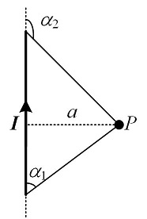

静电场与静磁场
一些定义
静电场： 研究空间内所有电荷(电子(及空穴)、离子等)保持静止,也就是没有电流.
恒流场： 研究空间内所有位置的电流恒定,也就是电流不随时间变化.
耦合：意思就是相互作用,可以是力的形式,电的形式.
介质：用来传输信息的物质. 例如声音要依靠介质进行传播;而光在真空中就可以传播,也就是说,光的传播不需要介质.
库仑定律:电荷产生电场
库仑力
两个静止点电荷和之间的相互作用力叫做库仑力,也叫静电力:
库仑力的特点:
- 等大反向.
- 同性相斥,异性相吸.
- ,其中为真空介电常数,这里先不对此常数进行解释.
- 叠加原理：根据力的叠加原理,位于处的某电荷收到的库伦合力是所有其他电荷对其作用的库仑力之和.
然而事实上,实际生活中我们很少遇到点电荷,更多的是带电体,因此根据叠加原理:
其中,为某空间内的电荷量,因此为体电荷密度.
进一步地,容易得到两个带电体1和2之间
电场强度
如果在空间内某一点放置一个测试电荷,若其收到的库仑合力为,由于与的比值与无关,因此定义单位正电荷在位置处所受到的力为电场强度：.
电场强度是有方向的矢量,因此如果将各点电场的方向在图中绘制出来,就形成了电场线.
- 高斯定理：通过某闭合曲面S的电通量等于该曲面S内部的电荷量之和除以.
静电场中,如果电场强度的在闭合曲面上的积分不为0,表示内部有电荷(电荷源),因此说电场是有源场.
环路定理：电场强度某闭合回路l的环量均为0.
静电场中,电场强度的在闭合环路上的积分一定为0,表示电场不可能一直沿着闭合环路,也就是静电场中不可能有闭合的电场线,因此叫做无旋场.
电势
如果试探电荷在电场中从位置1处移动到位置2处,此过程电场力对试探电荷做功,则电荷的电势能增大. 电势能的增加量与试探电荷q的比值与q无关,定义位置1与位置2之间的电势差为
因此有
- 电场线的方向总是由高电势指向低电势.
毕奥-萨伐尔定律:元电流产生磁场
如果个电子的向同一方向发生微小移动,则电流大小为,为穿过的截面积,为电荷移动的速度。这个电流叫做元电流。
原点处的元电流在处的磁感应强度为
练习题:求P点的磁感应强度.
答案: ,导线延长线上磁感应强度为0;当导线无限长时,.
安培力
某点处的元电流受到此点磁场的力为
磁通量
在处穿过曲面的磁感线的数量为磁通量:
例如,在一个电流环内部平面上距离圆心处的磁感应强度为:
于是
又由于,
于是
线圈中的磁通量为:
其中只与圆形线圈的半径有关.
- 安培环路定理:在真空中，磁感应强度沿任意回路的线积分，等于该回路所限定的曲面上穿过的总电流乘以磁导率。这表明磁场是有旋场。定义,二者的关系在电感进一步描述.这里是真空磁导率.
- 磁通连续定理: 磁感应线通常是闭合的。因此,对于磁场中的任何闭合曲面S,穿入的磁感应线数恒等于穿出的磁感应线数,即穿出闭合曲面S的净磁通量为零。
小结
本节主要讲了:
- 点电荷之间的库仑力,元电流之间的安培力;
- 静电场环路定理:电场的无旋性;
- 静电场高斯定理:电场的有源性;
- 静磁场安培环路定理:磁场的有旋性;
- 静磁场磁通连续定理:磁场的无源性.
引申:电流连续性方程
电荷守恒定律:单位时间内流出闭合曲面的电荷量等于该曲面内电荷量的减少量.即:
用面电流密度表示:
其微分形式为